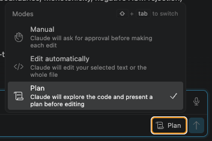

Lab 3: Plan Mode & Test-Driven Delivery
Give Claude a verifiable target, force planning before execution, and implement only after reviewing the plan.
Recap · Lab 2
This lab · Lab 3
After This Lab, You Will Be Able To...
- Explain what Plan mode does and when to reach for it instead of default mode.
- Use a failing test as the "spec" before writing code: test-driven delivery.
- Describe the analyze → plan → implement → verify → deliver flow.
- Recognize when a verified acceptance criterion improves both the plan and the implementation.
analyze → plan → implement → verify → deliver
The Lab 2 shape gains one governed step: Plan. Claude proposes changes and waits for your approval before touching a file: human-in-the-loop governance at the edit level.
| Phase | What happens | Artifact |
|---|---|---|
| Analyze | Read the failing tests: they are the verifiable target | Clear acceptance criteria |
| Plan | Use Plan mode to propose changes before executing | Reviewed plan |
| Implement | Execute the approved plan, one step at a time | Code changes |
| Verify | Run the tests: green means done | Passing tests |
| Deliver | Hand back a diff summary | Reviewable artifact |
WM-110: Drift Alerts Fire on Momentary Spikes
Before any tooling talk, here's the real ticket you're walking into.
The problem
A portfolio can drift 6% off target for a couple of minutes and self-correct, but today the system alerts on that very first crossing anyway. Advisors get paged for problems that were never real, and start tuning out every alert, including the ones that matter.
The fix
Add hysteresis: only fire an alert once a breach has lasted at least min_duration_minutes. A brief spike that corrects itself before then stays quiet. Hysteresis just means "wait a moment before reacting", like a smoke detector that ignores a bit of shower steam but still catches real smoke.
Add that hysteresis to drift.py: planned in Plan mode before you edit, and proven green by the tests, not by a claim that it works.
Propose, Review, Then Edit
Why Plan mode matters
- Enable it with the panel toggle, or press
Shift+Tabto cycle Manual → Edit automatically → Plan: nothing executes until you approve. - You see what Claude intends before it happens; reject, modify, or approve.
- The plan becomes documentation of intent: critical for alerting systems, unfamiliar code, and reviewing before approving.
- For WM-110, a good plan names the exact change to
drift.pyand confirmsmin_duration_minutes=0still alerts immediately; if it skips that, ask for a revision before you approve.

What Makes a Target "Verifiable"?
This is the Verification ingredient of the five-ingredient task frame from Lab 1: the same idea, sharpened. A verifiable target is a concrete, automated check that proves a change worked, instead of a claim that it worked.
Without one
"Fix the false-positive alerts" is an outcome, not a check. Claude says "done," and the only way to know if that's true is to read the code yourself or take its word for it, against vibes.
With one
A failing test names the exact input and expected output before any code changes. Run it, get a pass/fail; no judgment call, no vibes.
Deterministic (same input, same result, every time), specific (states exactly what "done" means), and automatable (a machine checks it, not a human's eyeball). Plan mode reviews a plan against this target; that's what makes the review real instead of a rubber stamp.
The Failing Test Defines "Done"
Run pytest test_drift.py -v. Four tests: one fails on purpose. Read it before you implement.
✅ within threshold
test_no_alert_when_within_threshold: passes. No breach, no alert.
✅ breach exceeds threshold
test_alert_when_breach_exceeds_threshold: passes. A real breach still alerts.
❌ brief spike
test_no_alert_for_brief_spike: fails. A spike under min_duration_minutes should NOT alert. This is the target.
✅ sustained breach
test_alert_after_sustained_breach: passes (for now, the wrong reason). A breach ≥ min duration should alert.
Lab 3 Handoff
Frame the task, plan before editing, then prove it green.
"Fix WM-110 drift alert false positives in drift.py by adding hysteresis: only alert if the breach lasts at least min_duration_minutes. The failing tests in test_drift.py define the acceptance criteria. Propose a plan first. Don't edit until I approve."
When reviewing the plan: a strong one names how breach duration will be tracked using reading.timestamp, not just "add a duration check."
Verify this lab
pytest test_drift.py -v: all 4 green.pytest -v: confirm nothing regressed.Deliverables
Quick Check: Plan Mode & Test-Driven Delivery
1. Which scenario is the best fit for Plan mode?
(a) Renaming a variable on a single line
(b) Adding a one-line print statement for debugging
(c) Fixing a fee calculation where a failing test already defines the acceptance criteria
2. What does it mean to use a failing test as the "verifiable target" before writing code?
(a) The failing test defines exactly what "done" looks like, before any implementation exists
(b) Tests are optional documentation you can skip
(c) Tests only matter after the code is finished
3. In the analyze → plan → implement → verify → deliver flow, what comes right after "plan"?
(a) Deliver
(b) Analyze again
(c) Implement
4. Why does a verified acceptance criterion (like a failing test) make both the plan and the implementation better?
(a) It removes the need for a plan entirely
(b) It gives Claude and the reviewer a concrete, checkable target instead of a vague description
(c) It guarantees the first attempt is always correct
You Can Now...
- Explain what Plan mode does and when to reach for it instead of default mode.
- Use a failing test as the "spec" before writing code: test-driven delivery.
- Describe the analyze → plan → implement → verify → deliver flow.
- Recognize when a verified acceptance criterion improves both the plan and the implementation.
You've done this live in Lab 3. Watch for this same discipline in Lab 4's agent loop, and again in Lab 7's enforced governance checks on Day 2.